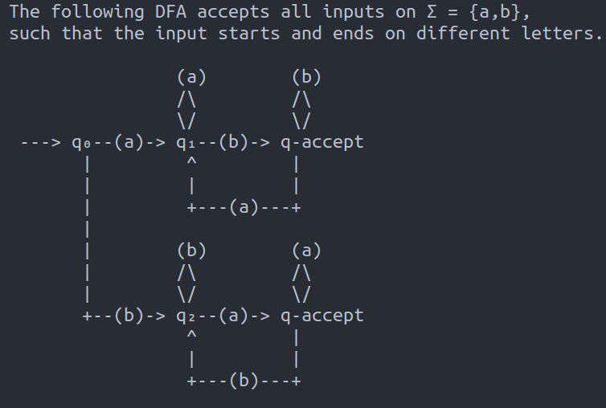

Theory of Computation
Home
Table of Contents
Notes taken from Reading Group
- Reference
- Book by Michael Sipser – Introduction to theory of computation
1 Finite automata
Part 1 will be Computability. Part 2 will be Complexity.
Finite state machine (Q, Σ, δ, q₀, F) a.k.a deterministic automaton
- Q = finite set of states
- Σ = finite alphabet
- δ : Q × Σ → Q
- q₀ = start state
- F = final state
A subset X ⊆ Σ* which has an automata M that accepts X is called a regular language.
- HW
- construct automata that accepts Σ = {a, b} and X = all strings that start and end with different letters.
- Solution
- 
Regular languages are closed under:
- Complementation (under Σ*)
- Union and Intersection
- Concatenation
- Kleene Star (i.e. unbounded concatenation)
Philosophically, DFAs are "memoryless".
Nondeterministic automaton (Q, Σ, δ, q₀, F)
- δ : Q × Σε → P(Q)
where,
- ε = empty string
- Σε = Σ ∪ ε
- P(Q) = power set of Q
In a "run" pick some possible paths that can be taken. Accept if any run with a given input ends in an accept state.
- Theorem
- For every NFA, there is an equivalent DFA. Equivalent means they accept the same
- Proof idea
- Given δ : Q × Σε → P(Q), construct δ' : P(Q) × Σε → P(Q). Then δ' is a transition function for a DFA. Need to show that δ' being partial function on P(Q) is not going to be an issue.
2 Regular expressions
They are another way to represent a regular language. ∅ is the language that contains no symbols. ε is the language that only contains the empty string. These are to different languages and are accepted by two different DFAs.
Regular expression can contain:
- ∅, ε
- Any character in Σ
- Parentheses, for grouping.
- Concatenation
- Union, ∪ or |
- Kleene star * (binds tighter than all other symbols)
Any finite language is regular – we can just list out all the elements.
Regular language ↔ ∃ a DFA that accepts it ↔ there is a
Pumping lemma is a necessary but not sufficient condition for a language to be regular.
Examples of non-regular language:
- L = {1ⁿ where n is prime}
- L = {1ⁿ where n is composite}
Pushdown automata (PDA) are automata with stacks (read from top of stack and then shove any number of symbols on top). Change of state can depend on the input (top element of stack).
A language recognized by a PDA is called context-free. PDAs have arbitrarily large memory (unlike DFAs) but they don't have arbitrary access!
Context-free grammars (CFG) are another way to write context-free languages. What makes a CFG context free is that its rules are for replacing a single variable at a time in a way that is independent of other surrounding characters.
CFGs are not closed under intersection and complementation! Non-example of CFG is: {aⁿbⁿcⁿ : n ∈ ℕ}.
3 Turing Machines
Similar to DFA but has unlimited and unrestricted memory. The stack is no longer losing information when we pop values. The memory is modeled as an infinite tape. The tape is more central to these machines than the state descriptors.
In most formal definitions we state that the pointer can move one cell to the left or right. But in fact, this is equivalent to a pointer that can move to any arbitrary position.
A Turing Machine might accept, reject or go on forever. Halting or not halting is what determines the decidability of a problem.
TM := (Q, Σ, Γ, δ, q₀, qaccept, qreject)
- Q = Set of states
- Σ = Alphabet for input strings
- Γ = Alphabet for writing to the tape. Σ ⊂ Γ. Blank symbol ∈ Γ-Σ.
- δ : Q × Γ → Q × Γ × {L, R} is the transition function
- q₀ ∈ Q is initial state
- qaccept ∈ Q is accept state
- qreject ∈ Q is accept state. qaccept ≠ qreject.
- If a string ends run in qaccept, then TM accepts string.
- If no run halts then, the TM neither accepts not rejects.
- If all runs that halt end in a qreject, then string is rejected.
Note that Q, Σ, Γ all should be finite sets.
For non-deterministic TM, δ : Q × Γ → P(Q×Γ×{L, R})
4 Decidability
If a TM accepts a language then the language is recognizable. (Recursively enumerable)
A TM that always halts is called a decider. A language that is recognized by a decider is said to be Decidable. (Recursive)
Decidable ⇒ Recognizable (converse not true).
A language that is recognizable but not decidable is the Halting problem.
Call a language L ⊆ Σ* decidable if there is a TM M such that for all w ∈ Σ*,
- M accepts w iff w ∈ L, and
- M rejects w iff w ∉ L, and
- M never loops on any run infinitely.
Examples:
- Multiplication is turing recognizable and decidable.
- The language {⟨A, w⟩ | A is a DFA that accepts input w} is decidable
Decidability is equivalent for deterministic and non-deterministic TMs. But the complexity questions are not equivalent.
Not all languages that Turing-recongnizable are decidable.
5 Halting problem
- Halting problem
- The language HALT = {⟨M, w⟩ | M is a TM that accepts input w} is undecidable.
- Proof
- By contradiction.
HALT is turing-recognizable.
6 Time complexity
Let g : ℝ⁺ → ℝ⁺. Then O(g(n)) is the set of functions f : ℝ⁺ → ℝ⁺ for which ∃ M ∈ ℝ⁺ such that f(x) ≤ Mg(x) for all sufficiently large x.
f ∈ Θ(g) ↔ f ∈ O(g) ∧ g ∈ O(f). So Θ is more precise than O. Because for example, O(n²) ⊂ O(n³).
P ⊂ NP ⊂ PSPACE ⊂ EXPTIME P ≠ EXPTIME. Therefore, at least one other the inclusions above must be strict.